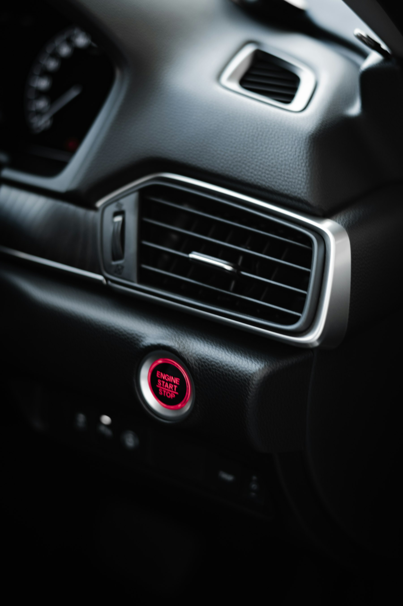

Featured · Road TripsFive unforgettable coastal drives
Practical advice and ideas from the Aeron Drive team on five unforgettable coastal drives.
Read article →
GuidesHow to choose the right rental car
Practical advice and ideas from the Aeron Drive team on how to choose the right rental car.

EVYour first time driving electric
Practical advice and ideas from the Aeron Drive team on your first time driving electric.
BusinessExecutive travel made simple
Practical advice and ideas from the Aeron Drive team on executive travel made simple.

TipsWhat to check before you drive away
Practical advice and ideas from the Aeron Drive team on what to check before you drive away.
ExperiencesA weekend in a grand tourer
Practical advice and ideas from the Aeron Drive team on a weekend in a grand tourer.
No articles found
Newsletter
Stay in the loop
Insights, news and ideas from our team — once a month, never spam.